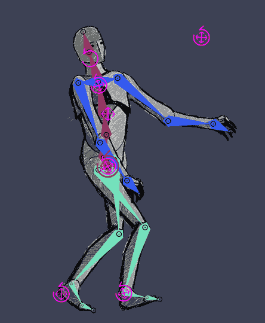

For my first animated GIF, I created a blink animation using artwork that I designed in Adobe Illustrator and then imported into Photoshop. I organized the eye illustration into separate layers so I could control each part of the motion more easily. In Photoshop, I used the Timeline panel to create a frame animation and adjusted the eyelid position across several frames to show the eye opening and closing. I kept the movement simple and readable so the blink would loop smoothly. I experimented with frame delay settings to control the speed and make the motion feel natural. This exercise helped me understand how even a small change between frames can create the illusion of life and expression.

For my second animated GIF, I created a cut-up cinema animation using a photograph and Photoshop’s Puppet Warp tool. I first selected and isolated the figure from the background, then duplicated the image and made slight pose changes by adjusting different parts of the body. These small changes created a sense of motion across the sequence. I arranged each pose as a separate frame in the Timeline panel and tested different playback speeds until the animation looked fluid. I also thought about how gesture, repetition, and rhythm can make a short loop more interesting. This process showed me how GIFs can transform a still image into a playful and expressive moving composition.

This homework helped me understand the basic logic behind animation by breaking movement into individual frames. Before this, I mostly thought of animation as something complicated or time-intensive, but making GIFs showed me that even short and simple loops can be effective. The blink animation taught me how small visual shifts can communicate expression, while the cut-up cinema project showed me how photographs can be manipulated into motion through digital tools like Puppet Warp. I also learned how important timing is. Changing the frame delay by even a small amount affected how the animation felt, whether it seemed smooth, awkward, fast, or calm. I found that GIFs are especially interesting because they are limited. They do not use sound, they are short, and they rely on repetition, but those limits actually push creativity. Overall, this project gave me a better understanding of frame animation in Photoshop and helped me think more carefully about motion, looping, and digital visual storytelling.